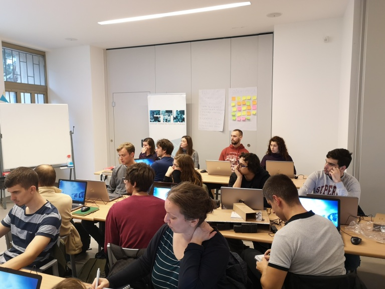
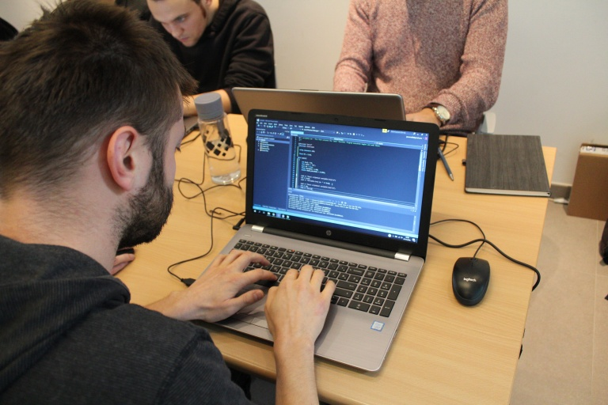

Započeo je prvi ciklus osposobljavanja za junior developere
 30. STUDENOGA 2018.
30. STUDENOGA 2018.

Prvi ciklus osposobljavanja za junior developere je započeo u pozitivnom i motiviranom duhu. Nakon međusobnog upoznavanja te upoznavanja s planom i programom edukacije, polaznici su odmah krenuli u stjecanje novih znanja.
U skladu sa svojim očekivanjima o pronalasku posla nakon završetka edukacije, već u prvom tjednu su se uhvatili učenja osnovnih koncepata u programiranju poput varijabli, naredbi grananja, petlji i sl., a svoja novostečena znanja su iskoristili kako bi pronašli rješenja za razne jednostavnije vrste problema iz stvarnog svijeta, čije rješavanje računala i logičko razmišljanje uvelike olakšavaju.
Prilično ispunjen raspored i mnogo novih koncepata koji iziskuju razmišljanje „izvan okvira“ svakodnevice ne dopuštaju mnogo vremena za savladavanje novog gradiva, ali rezultati koje za sada pokazuju polaznici, opravdavaju uložen napor i daju poticaj za nastavak. Nakon uvodnog dijela o osnovama programiranja, slijede napredniji koncepti i proučavanje algoritama i struktura podataka te rad s bazama podataka prije pauze za nadolazeće blagdane.
Sadržaj web stranice isključiva je odgovornost Centra tehničke kulture Rijeka.
Izradu internetske stranice sufinancirala je Europska unija iz Europskog socijalnog fonda.
© 2018 CTK Rijeka. Sva prava pridržana.